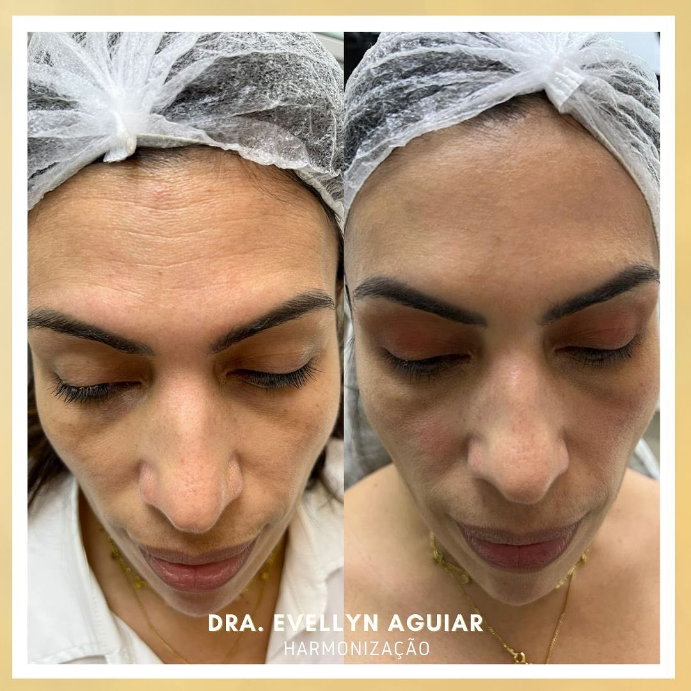

Planejamento individualizado e uma abordagem que valoriza a beleza natural da sua própria história, sem excessos.
A abordagem da Dra. Evellyn parte de um princípio simples: cada rosto possui características próprias que devem ser respeitadas. O objetivo do rejuvenescimento é valorizar, equilibrar e cuidar — não descaracterizar.
Cirurgiã-dentista com atuação dedicada à Ortodontia e à Harmonização Facial Avançada, a Dra. Evellyn concentra sua prática no rejuvenescimento facial natural e profundamente personalizado.
Com atendimento focado na região metropolitana do Rio de Janeiro, sua trajetória é marcada por constante atualização e refinamento técnico, incluindo capacitações internacionais destacadas e formação complementar voltada à área de rejuvenescimento em Harvard.
Sua visão sobre estética facial culminou na criação do Método Mescla das Musas, uma abordagem proprietária que entende que nenhuma pele é igual à outra, exigindo um protocolo de cuidado único.
Atendimento
Niterói & Barra da Tijuca
"Uma assinatura de cuidado. Tratar cada pele de acordo com a sua própria história."
Desenvolvido com exclusividade pela Dra. Evellyn, o Método foge completamente de fórmulas prontas. É uma imersão na necessidade real do seu rosto.
Baseado em protocolos estritamente personalizados, a formulação é definida apenas após uma avaliação minuciosa. As aplicações (subcutâneas ou tópicas) entregam exatamente o que sua pele precisa para recuperar viço, firmeza e saúde.
Nutrição essencial e combate aos radicais livres.
Equilíbrio e suporte estrutural para a derme.
Estímulo direcionado para regeneração e firmeza.
Hidratação profunda e melhora da textura global.
O planejamento envolve diferentes estratégias para melhorar a aparência e a qualidade da pele, sempre considerando as características que fazem o seu rosto ser único.
Avaliação individual minuciosa para definir uma estratégia de cuidado estético compatível com as suas características estruturais e objetivos pessoais.
Procedimentos injetáveis voltados ao estímulo da produção natural de colágeno, auxiliando na firmeza e no suporte da pele, quando indicados.
Utilização de recursos como o ácido hialurônico para hidratação profunda, estruturação ou preenchimento, aplicados de acordo com a real necessidade.

A proposta da Dra. Evellyn valoriza resultados que preservem a identidade facial, evitando exageros e buscando o equilíbrio perfeito entre estrutura, proporção e a sua beleza natural.
Compreensão de características, necessidades e objetivos.
Definição de uma estratégia estética totalmente personalizada.
Seleção e aplicação dos recursos adequados à avaliação prévia.
Orientação contínua e acompanhamento da evolução.
A Ortodontia integra a trajetória profissional da Dra. Evellyn, atuando no planejamento corretivo e na harmonia funcional do sorriso, complementando a visão estética global.
Clínica Harmony Estética e Beleza Facial
Complexo Vog Square — Rio de Janeiro
Conheça uma abordagem de rejuvenescimento facial pensada para valorizar sua beleza, respeitar sua individualidade e construir um plano de cuidado personalizado para você.
É uma metodologia autoral exclusiva desenvolvida pela Dra. Evellyn Aguiar, baseada na criação de protocolos estritamente personalizados de acordo com a necessidade da pele de cada pessoa.
Não. A proposta da Dra. Evellyn é focar na naturalidade e na preservação das características individuais, buscando equilibrar e suavizar sinais do tempo sem descaracterizar a fisionomia.
Os protocolos dependem exclusivamente da avaliação individual. Podem envolver diferentes estratégias integradas, incluindo bioestimuladores de colágeno, preenchimentos pontuais, hidratação injetável e outros recursos dentro da atuação profissional.
A composição é sempre personalizada, mas o arsenal do método engloba o uso criterioso de vitaminas, antioxidantes, minerais, peptídeos específicos e ácido hialurônico.
Os atendimentos são realizados em Niterói (Clínica Harmony Estética) e no Rio de Janeiro, na Barra da Tijuca (complexo Vog Square).